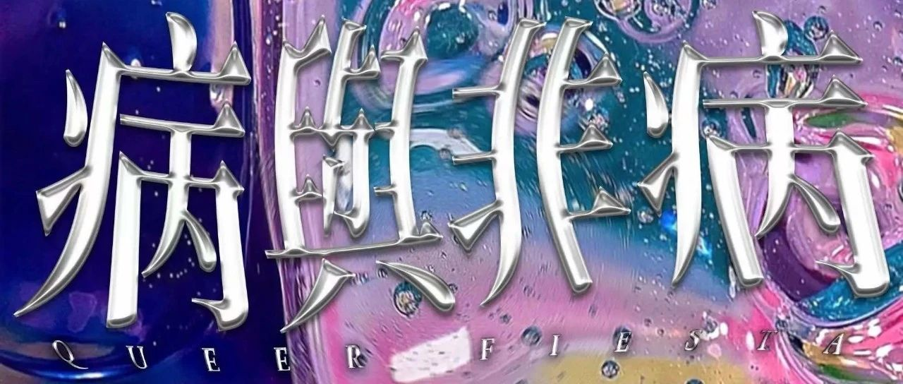

成都今晚｜「病与非病」放映&Rave 免费入场（5/27）
片名：Midnight Frontier
导演：Peter van LangenIris-Sanne van der Aar
时长：20分钟 语言：英语中字
讲述站在格鲁吉亚 LGBTQI+ 激进主义前线的激进主义者的故事。他们讲述了他们在国际不再恐同日期间的经历，当时他们遭到了由格鲁吉亚东正教教会领导的数千名反同性恋激进分子的袭击。Club Bassiani 和他们的酷儿之夜 Horoom Nights 构成了他们抵制恐同暴力的堡垒。对他们来说，格鲁吉亚的夜生活不是逃避，而是一种反抗。一场不在俱乐部围墙内的战斗，通过舞蹈团结朋友和敌人。
2
导演：Stephen Isaac-Wilson
时长：17分钟 语言：英语无字幕
从Section 28激动人心的效果到Second Summer of Love的另类边缘，HomoElectric 和 Flesh 等夜店成为曼彻斯特酷儿狂欢现场的中心。Fleshback 是对那些多事的时代的庆祝，探索这个多彩世界的生动历史、持久遗产和现在的景观。
严禁性骚扰，与ta人互动前请获取对方的同意；
严禁一切恐同、恐跨、恐双、性别歧视、身体歧视、种族歧视等言论与行为；
请勿假定周围人的性别和性向，交流时可以询问对方的称谓或使用无性别称谓（朋友、伙伴等）；
如果你在派对上感到遭遇了骚扰或歧视，可以找工作人员或DJ寻求帮助。